A Research Seminar · 2026

Dr. Babasaheb Ambedkar
Marathwada University
Marathwada University
Maulana Azad College of Arts, Science & Commerce
Aurangabad
Aurangabad
·
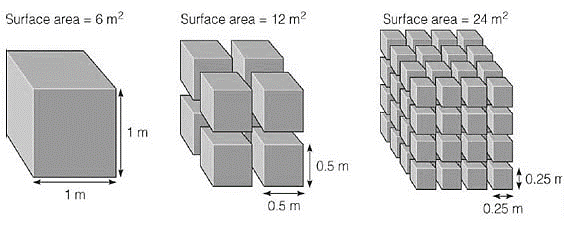
The study of structures and molecules on a scale of
1 to 100 nanometres
The science of building super-tiny subatomic or ultrafine particles.
Nanotechnology is one of the most promising technologies of the 21st century. It is the ability to convert the nanoscience theory to useful applications by observing, measuring, manipulating, assembling, controlling and manufacturing matter at the nanometre scale.
1918 — 1988 ◆ American Physicist ◆ Nobel Laureate
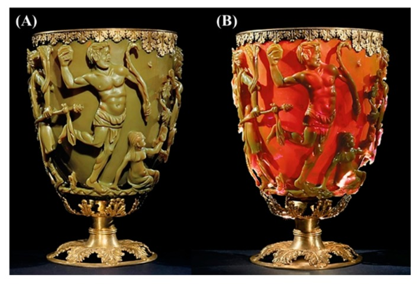
After Feynman opened this new field, two approaches emerged for synthesizing nanostructures - differing in quality, speed and cost.
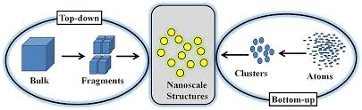
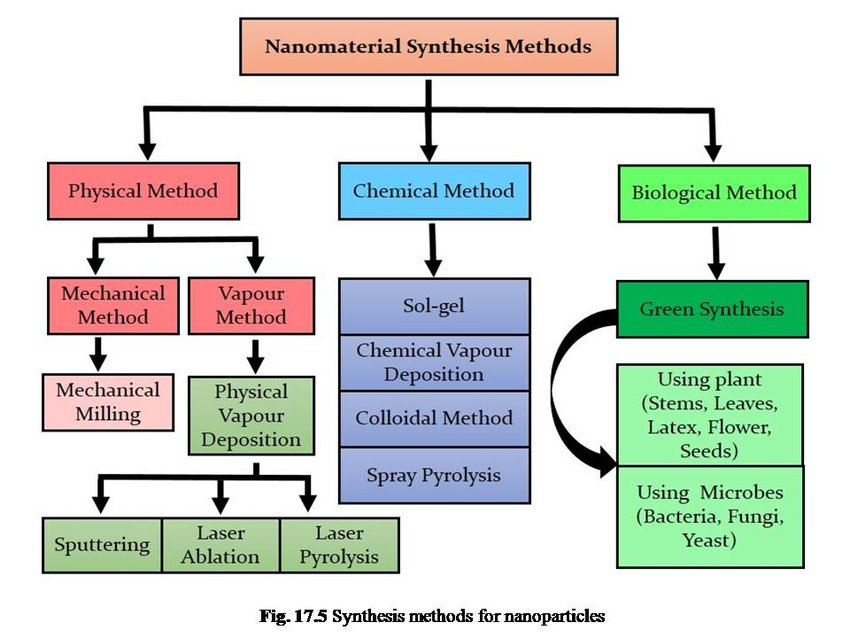
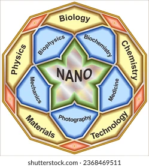

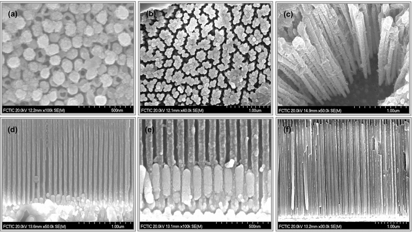
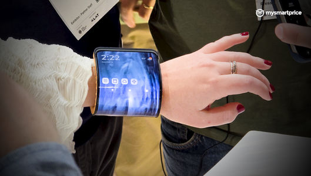
From C60 bulkyballs (1985) → carbon nanotubes (1991) → graphene & C-dots (2004) - carbon-based materials became the backbone of every field of science and engineering.
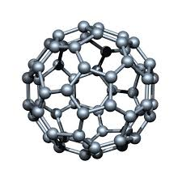
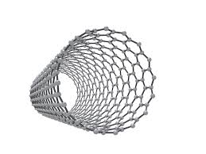
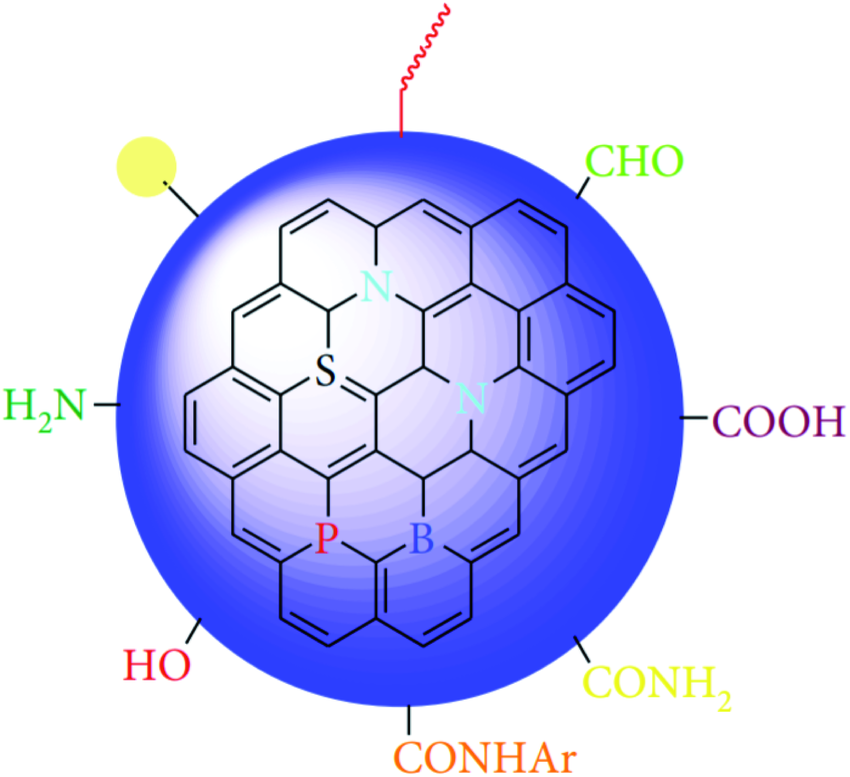
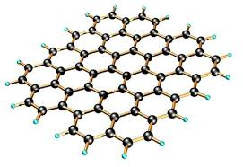
C-dots - benign, abundant, inexpensive, low-toxicity, bio-compatible - power bio-imaging, biosensors, drug delivery, catalysis, energy conversion, photocatalysis and sensitive ion detection.
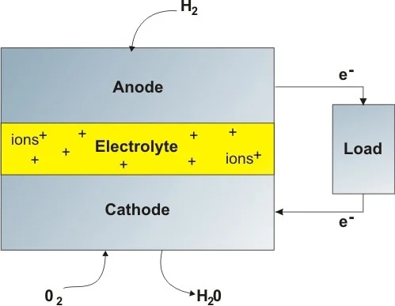
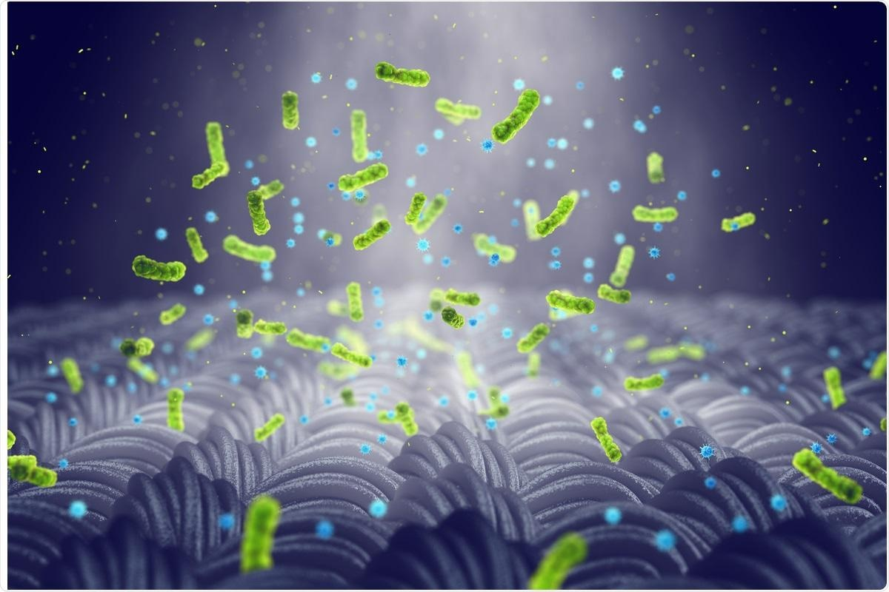
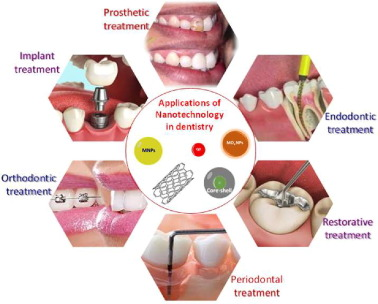
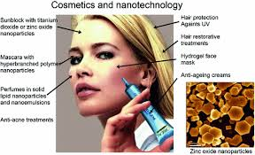
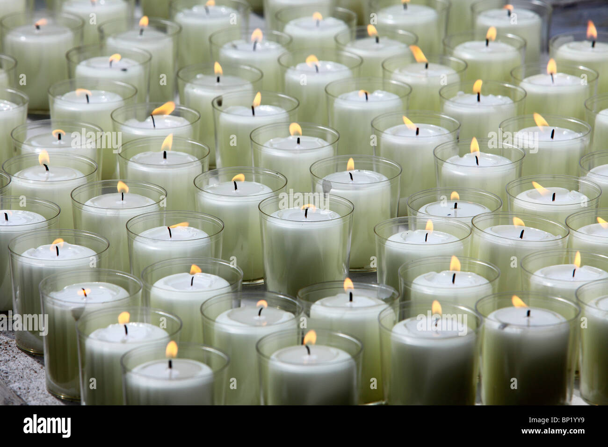